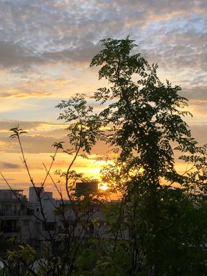

うるがいの話 ある日
最新: コロナ禍のウンケー
うるがいとは 前提知識です
カニの画像をクリックすると『うるがいの話』サイトを表示します
うるがい(ｳﾙｶﾞｲ urugai)とは、『もずくがに』の名前でとても大きくなります。
たながー（ﾀﾅｶﾞｰtanagaa）とは手長えびのことで、何種類かあり大きいのは車 エビぐらいになります。
ぶながー(bunagaa)とは、赤い髪の毛、赤い身体、そして身長は１ｍ２０ｃｍ ぐらい、川の蟹を食べているの目撃された。場所は沖縄県国頭郡大宜味村のと ある村僕の隣近所に住んでいる爺さんから、聞いた話です。
2021年08月20日 (金）
コロナ禍のウンケー
16:53

昨日ウンケーの準備をして！と言われた。ん！、準備って、提灯の延長コード
だけじゃないの、とプレシャーをかけられた。昨日の昼過ぎ、炊飯器のご飯を
洗っておいて、ただし、少なめに！、ウンケーでジュシーを炊きなおすから。
ところがである、習慣は恐ろしいもので普通に炊いた。怒られた、いや最近雑
なので・・、と言い訳をする。ところで、ジュシーはいつ使うのかと気になっ
た、毎年やっているのにいざとなると自信がない。ネットで調べる、夕方ジャ
ン！、夕方にあの世から迎える、そうだそうだと昼まではジュシーじゃない。
でも、やはりご飯はかなり残りそうだ、とどうでもいいことを考える。この前
お中元を貰いに行った帰り、ヨメがそのうちスマホを替えるときに行こうと考
えていた携帯の店舗が無くなっていた！。３年以上も経つので充電がいまいち
と半年前から機種変更したいと言っていたが、コロナが収まってからと伸ばし
伸ばしにしていた（これだけでなく、他のものも伸ばしているので困っている
）。そういえばラジオでも、携帯の店舗での感染防止から殆ど来店しないと。
日家にきたコドモが、ネットで機種変更手続きをしていた。あっという間に済
ませる。暫くすると新しい機種が届くらしい、あの携帯の店舗の店員さん達は
どうなったのだろう・・・。